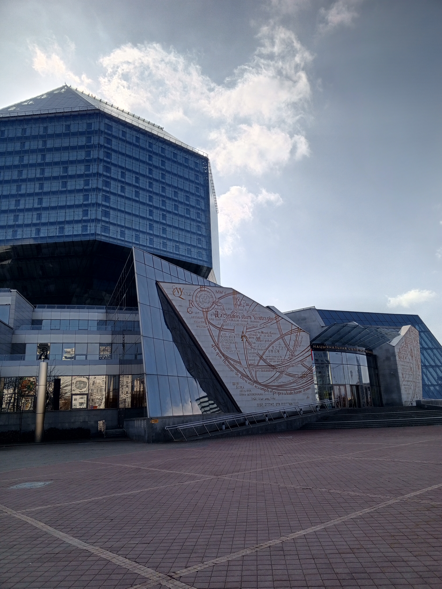

Miasto, w którym wszystko się zaczęło

Stolica Białorusi
Odwiedzona: dzieciństwo
Mińsk to nie jest dla mnie zwykłe miasto. To miejsce, gdzie się
urodziłam, dorastałam, gdzie stawiałam pierwsze kroki. Tutaj nauczyłam
się jeździć na rowerze, poznałam swoją pierwszą miłość, zawarłam
przyjaźnie, które trwają do dziś.Każda ulica, każdy park, każdy
sklepik pamięta moje dzieciństwo. To miasto jest częścią mnie, tak jak
ja jestem częścią niego.
Moje ulubione kadry z Mińska
Najbardziej tęsknię za ludźmi. Za rodziną, która tam została. Za
przyjaciółmi z dzieciństwa. Mińsk zmienia się, rośnie, staje się
nowoczesny, ale dla mnie zawsze będzie tym samym miastem pełnym
ciepłych wspomnień i miłości.